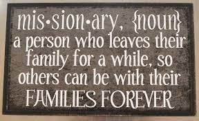
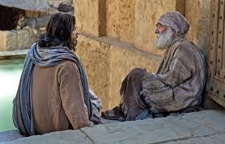

Week 7
Week 6
Week 5
Week 4
Matt 19-20; Mark 10; Luke 10-18;John 11<\h3>
Week 3
Matt 14-18; Mark 6:14-56, 7-9; Luke 9:7-62; John 6-10
Missionary have been on my mind this week.when doing the readings Missionary work is important to share the gospel in many religions. this week in my ward the bishop's son gets home form is mission.In my homeward there is a Missionary leaving for his mission. maybe that is why missions and missionaries have been on my mind, but that is what I got out the most for the readings this week.the sermon on the mount and feeding the 5000(if I remember right,got to double check that) the 5 loaves and two fish. is like missionary work. christ went to preach his gospel to them and they ate with him. we will be nowhere with our Christ. he is the living bread and water. we need him to live. In the db I shared about that. One thing that I said is that we shouldn't worry about the Numbers because it is not about numbers. I know we are a record keeping church ,but it is not all ways about numbers. We shouldn't focus on the amount of baptisms, or how many we have come to church. it is about serving the people in that area. a young man I knew was in Russia and he couldn't wear a name tag or preach the gospel. all he and the other missionaries did was service. I knew a sister form a ysa ward who also went to Russia and she said that they have to live as they lived in Russia to bled in and to serve where need. I think that at times that is what is more important in this church is the service we give to others. That is the true love of Christ. yes he will teach others but he will also go and help them in their time of need. he wouldn't care about how many times they went to church or anything. He will just be willing to help. that is also why service missionaries. That is what they do is just serve others and help the church grow.
Week 2
Matt 5-13; Mark 2-5; Luke 5-8
What stood out to me this week is Matt 5. In Matt 5 it talks about being a light unto the world. It got me thinking about President Nelson’s talk from last general conference ,”Peacemakers need”. In my mind peace and light go together. I think that is because God is light. Light can over come the dark no matter want. Just a little light can make a big differences. This got me thinking of a video Elder Bender did called Patterns of Light. He said, "Sometimes receiving inspiration is like a foggy day. … You can see just enough to take a few steps ahead into the cloudiness" I love this story Sister Cordon share in April 2020,"When I was 10 years old, our family had the honor of hosting Elder L. Tom Perry of the Quorum of the Twelve Apostles while he was on assignment in my hometown. At the close of the day, our family and the Perrys sat down in our living room to enjoy my mother’s delicious apple pie while Elder Perry recounted stories about Saints around the world. I was enthralled. It was getting late when my mother called me into the kitchen and asked a simple question: “Bonnie, did you feed the chickens?” My heart fell; I had not. Not wanting to leave the presence of an Apostle of the Lord, I suggested the chickens could fast until morning. My mother replied with a definitive “no.” Just then, Elder Perry entered the kitchen and with his booming, enthusiastic voice asked, “Did I hear someone needs to feed the chickens? Can my son and I join you?” Oh, what an absolute joy it now became to feed the chickens! I ran to get our large yellow flashlight. Excited, I led out, skipping over the well-worn path to the chicken coop. With flashlight swinging from my hand, we crossed the corn patch and passed through the wheat field. Reaching the small irrigation ditch that crossed the path, I instinctively jumped over it as I had done many nights before. I was oblivious to Elder Perry’s efforts to keep up on a dark, unknown path. My dancing light did not help him see the ditch. Without a steady light to see, he stepped directly in the water and let out a loud groan. Panicked, I turned to see my new friend remove his soaking wet foot from the ditch and shaking the water from his heavy leather shoe. With a soaked and sloshing shoe, Elder Perry helped me feed the chickens. When we were through, he lovingly instructed, “Bonnie, I need to see the path. I need the light to shine where I am walking.” I was shining my light but not in a way that would help Elder Perry. Now, knowing that he needed my light to safely navigate the path, I focused the flashlight just ahead of his steps and we were able to return home with confidence." I like this story that Sister Cordon shared. It is a great remember that we need to share our light so that all can see and find their way back to haven.
Week 1
Matt 1-4; Mark 1; Luke 1-4; John 1-4, 17
The many things that I got out of this week reading is God is love. He loves us and what’s the best for us. He wants us to be with him again. John 3: 16 reads: “For God so loved the world, that he gave his only begotten Son, that whosoever believeth in him should not perish, but have everlasting life.” This shows the love God as for us that he gave to us what matte the most to him. He knew we could not do it alone. On the Church website it states: “God loves everyone with an everlasting love. He is the father of our spirits. We are His children. He loves each one of us individually and wants us to come to know and love Him.” I also like what verse 17 says: “For God sent not his Son into the world to condemn the world; but that the world through him might be saved.” Christ was not sent here to condemn but to be a person we can relive on. To help us, to talk to and to be a peacemaker in our lives. Again, form the church website it states: “God knew that this life would be full of challenges and uncertainty. He knew that we would fall short and make mistakes. So, He sent His Son, Jesus Christ, to earth. Jesus lived a perfect, sinless life. He taught His gospel and showed us the right way to live. He willingly gave his own life as a sacrifice for our sins. He is our loving Savior and Redeemer.” We need to remember that we can’t really do anything that we can’t use the Atonement on. Christ knew/knows everything that we will go though in this life. He felt it and he bleed for it. He as asks us to come unto him because he knows what we will or have been though. When we can’t carry it anymore, we can give it to him. This is also from the church website: “God loves us immensely. His greatest gift to humankind—His Son, Jesus Christ—reflects that love and is central to His plan of happiness for all of His children.” I feel that this sums up all of the reading for this week. God gave us his son because he loves us.
